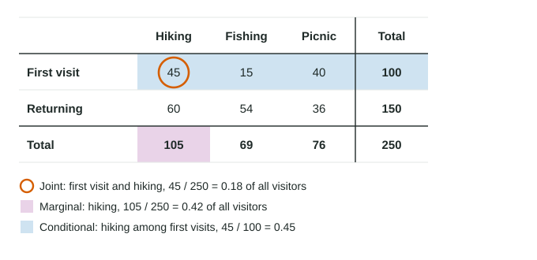

Summary Statistics for Two Categorical Variables
From one two-way table you can find three kinds of share.
Part 1 · Hook
Why this matters
Part 2 · Before you start
What this builds on
Part 3 · Prerequisite check
Quick check before you start
1. In a two-way table, where is the grand total?
- In the corner, where the Total row and Total column meet
- At the end of the first row
- At the top of the first column
- In the largest cell
Show the answer
The grand total counts every individual and sits where the totals meet.
- Correct: In the corner, where the Total row and Total column meet:
- At the end of the first row:
- At the top of the first column:
- In the largest cell:
2. A relative frequency is
- a count divided by a total
- a count multiplied by 100
- the largest count in a table
- a total minus a count
Show the answer
A relative frequency is a share: count over total.
- Correct: a count divided by a total:
- a count multiplied by 100:
- the largest count in a table:
- a total minus a count:
Part 4 · See it
See it first

Part 5 · Step by step
How it works, step by step
- Divide one cell by the grand totala joint relative frequency: the share of everyone in that pairing (45 of 250 are first visits who hiked, 0.18)
- Divide a row or column total by the grand totala marginal relative frequency: the share of everyone in one category (105 of 250 hiked, 0.42)
- Divide one cell by its row or column totala conditional relative frequency: the share within one group (45 of the 100 first visits hiked, 0.45)
- Compare conditional relative frequencies across groupsif they differ, the variables are associated
Part 6 · Key ideas
Key ideas
- Joint relative frequency: one cell over the grand total.
- Marginal relative frequency: a row or column total over the grand total. The marginal distribution of a variable lists them for every category.
- Conditional relative frequency: one cell over its row or column total. Read "of those who ..." to find the group, and divide by that group's total.
- Conditional relative frequencies for one group add to 1. If they are the same for every group, there is no association.
Part 7 · Misconception
A common mistake
The wrong idea: The share of course takers who passed and the share of passers who took the course are the same number.
What actually happens: They have different denominators: 60 of the 80 course takers passed (0.75), but 60 of the 126 passers took the course (0.476). The group named first is the denominator.
Part 8 · Check yourself
Check yourself
Exam-style questions. Anything you miss goes into your review queue.
Table
Park visitors by visit type and activity
| Visit type | Hiking | Fishing | Picnic | Total |
|---|---|---|---|---|
| First visit | 45 | 15 | 40 | 100 |
| Returning | 60 | 54 | 36 | 150 |
| Total | 105 | 69 | 76 | 250 |
1. What proportion of the 250 visitors were on a first visit and hiking?
Type a number. A table answer and a calculator answer are both accepted.
Show the answer
A joint relative frequency divides one cell by the grand total: .
- Answer: 0.18
2. What is the marginal relative frequency of fishing?
Type a number. A table answer and a calculator answer are both accepted.
Show the answer
A marginal relative frequency uses a total on the edge of the table: 69 of the 250 visitors fished, .
- Answer: 0.276
3. Of the returning visitors, what proportion came to fish?
Type a number. A table answer and a calculator answer are both accepted.
Show the answer
"Of the returning visitors" means divide by that row's total: .
- Answer: 0.36
Table
Driver's education and the road test
| Course | Passed | Failed | Total |
|---|---|---|---|
| Took the course | 60 | 20 | 80 |
| No course | 66 | 54 | 120 |
| Total | 126 | 74 | 200 |
4. What proportion of the drivers who took the course passed on the first try?
Type a number. A table answer and a calculator answer are both accepted.
Show the answer
Start from the 80 course takers: .
- Answer: 0.75
5. A school ad says, "Most drivers who pass on the first try took a driver's education course." Do these data support the ad?
- No: of the 126 drivers who passed, only 60 (about 48%) took the course
- Yes: 75% of the drivers who took the course passed, which is most of them
- Yes: 60 course takers passed, which is most of the group of 80
- No: the course takers are 80 of 200 drivers, which is 40% of the sample
Show the answer
Start from the drivers who passed: 60 of the 126 took the course, , less than half.
- Correct: No: of the 126 drivers who passed, only 60 (about 48%) took the course: Right: "of drivers who pass" means divide by the 126 who passed.
- Yes: 75% of the drivers who took the course passed, which is most of them: True, but that answers a different question, about course takers rather than about drivers who passed.
- Yes: 60 course takers passed, which is most of the group of 80: The ad is about drivers who passed, so the group to start from is the 126 who passed.
- No: the course takers are 80 of 200 drivers, which is 40% of the sample: That is the marginal share who took the course, not the share of passers who did.
6. A table of 500 voters shows party membership and support for a school bond. 120 voters are Party A members who support the bond. What is ?
- A joint relative frequency
- A marginal relative frequency
- A conditional relative frequency
- The percent of Party A members who support the bond
Show the answer
One cell over the grand total is a joint relative frequency: 24% of all 500 voters are Party A members who support the bond.
- Correct: A joint relative frequency: Right: one cell divided by the grand total.
- A marginal relative frequency: A marginal uses a row or column total on top, not one cell.
- A conditional relative frequency: A conditional divides by a row or column total, not by 500.
- The percent of Party A members who support the bond: That would divide by the number of Party A members.
Part 9 · Summary
Summary
Part 10 · Up next
What comes next
Part 11 · Connections